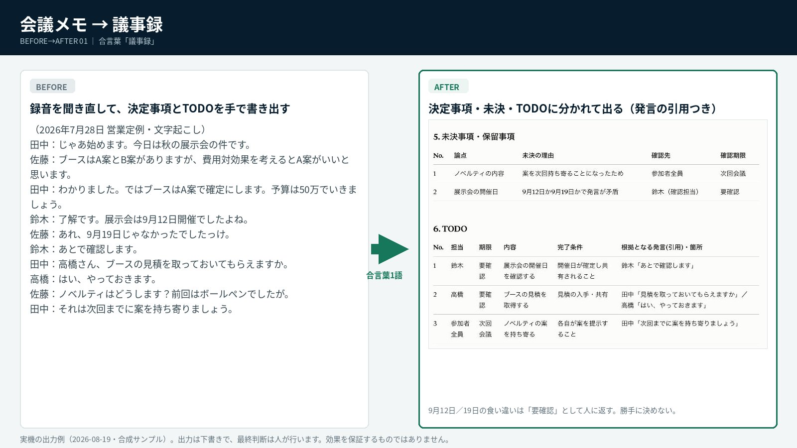
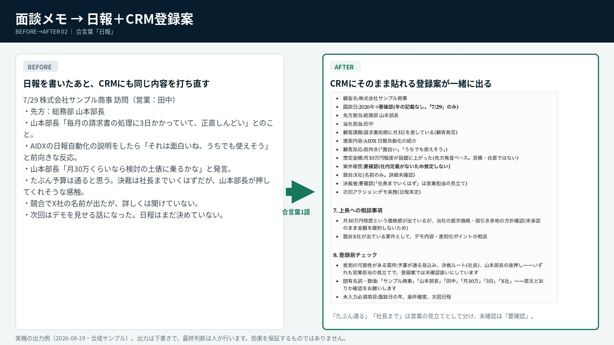
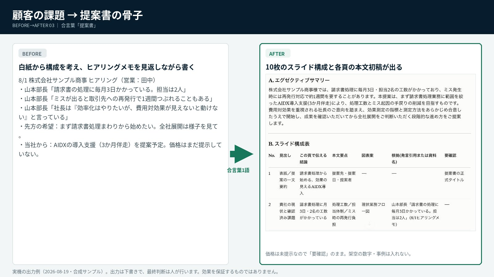

BEFORE → AFTER 01
会議メモ → 議事録
録音を聞き直して手で書く決定事項／未決／TODOが発言の引用つきで出る
AI DX ROI DIAGNOSIS
248の業務パックが、合言葉1語で動く。機能の説明ではなく、成果物が出る瞬間と、回収期間まで。
動くところを見る 3分でROIを診断するモデルケース：従業員30名・平均時給2,500円
MOCK — 動くところ
「議事録」と打つ → 会議メモを貼る → 決定事項とTODOが現れる。この15秒がAIDXの体験です。
実機の画面（2026-08-19）：「議事録」と打つ → 材料待ちで止まる → 会議メモを貼る → 決定事項・TODO・要確認が出る（約16秒・自動再生）



画像はクリックで拡大。すべて実機の出力例（合成サンプル）で、出力は下書きです。最終判断は人が行います。効果を保証するものではありません。
DEMO LIBRARY
生成映像で課題を自分事化し、入力・出力・人の確認までを業務別に示します。
録音を、決定事項とToDoへ。
最終確認と判断は、人が行います。
話した内容を、日報と次の行動へ。
最終確認と判断は、人が行います。
顧客課題から、提案の初稿へ。
最終確認と判断は、人が行います。
INDUSTRY SCENES
予約返信、口コミ、カルテ。営業後に残っていませんか。
商談メモ、CRM、追客、提案書。営業後に残る転記を、次の顧客対応へ戻す。
現場後の報告書が、売上を生まない残業になっていませんか。
ROI SIMULATION
自社の人数、時給、業務時間を入力すると、年間効果と投資回収期間をその場で試算できます。数値はすべてブラウザ内で計算し、外部送信はしません。
WHY ALPHA BASE
道具を売って終わりにしない。3か月で「使える状態」まで一緒に作り、その仕組みを全部見せます。
キックオフ、ヒアリング、研修など標準10項目で定着まで伴走します。（文言は概要書面と揃えて確定）
法人向けプラン（Team）で運用。入力・出力は既定で学習に使われません（Anthropic商用規約）。業務に不要な個人情報は入力しない運用ルールも設けています。
定着した業務を土台に、オプション追加・月次・パートナーへ。次の区画へ。
AI Alphaが標準の入口を用意し、導入企業は日々の成果物を同じ場所に増やします。担当が変わっても、使い方・確認ルール・改善履歴が残る構成です。
06_部門別の成果物
確認済みの成果物を、部門ごとに蓄積します。
最初に決めること：共有ドライブのオーナーと、各フォルダの更新責任者。
OWNER DECISIONS
日常の定着、業務の効果、例外時の引き継ぎまで。会社として判断できる材料を残し、導入を育てます。
担当者しか知らない入口や手順があると、連絡が取れないだけで配信・確認・引き継ぎが止まります。業務メニュー、担当、出力例、改善履歴を会社の資産として残します。
次の担当者が、どこから再開するかを判断できる。利用状況と業務ごとの活用を確認し、使われない理由を「研修」「入口」「業務設計」のどこにあるかへ分けます。必要な支援だけを次の改善へつなげます。
定着を、感覚ではなく運用データで育てる。対象業務の時間、出力件数、確認・やり直しを工程ごとに測ります。人を丸ごと置き換えるのではなく、削減できた工程を人件費換算し、次の投資判断へつなげます。
「便利」を、経営が判断できる数字に変える。データの扱い：日常は利用量・定着状況・業務台帳を確認します。会話内容の確認は日常の監視目的ではなく、組織の権限、社内規程、契約、必要な手続きに沿った例外対応として設計します。利用できる範囲は導入するプランと組織設定を確認して決めます。
3 MONTHS & AFTER
248はプロンプトを渡して終わる商品ではありません。実機で確かめ、御社の業務に合わせ、人が判断できる形で使い続けられる状態までをつくります。
キックオフとヒアリングで、対象部門・業務・確認者・利用ルールを明確にします。AIに任せることと、人が最終判断することを最初に分けます。
セットアップ後、業務ごとに実機テストを行います。曖昧な丸投げは必要な材料へ戻し、出力は下書き・要確認として扱えるかまで確認します。
共有ドライブに業務メニュー、出力例、改善履歴を残し、効果測定と次の90日計画につなげます。担当が変わっても使い続けられる状態を目指します。
経営者が確認するのは、AIの機能数ではありません。 投資効果、現場での再現性、そして3か月後に会社へ何が残るかです。